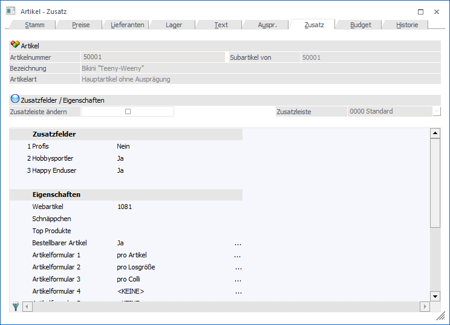
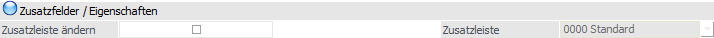
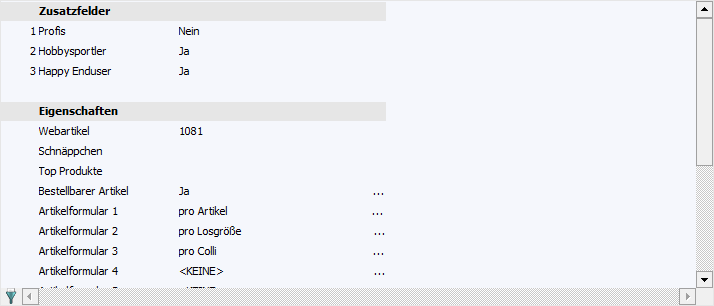
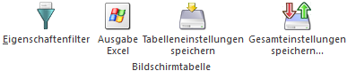

Im Register "Zusatz" können bis zu 30 frei definierbare Eingabefelder (bis jeweils max. 255 Zeichen) befüllt werden. Über die Gestaltung verschiedener Zusatzleisten können sogar mehrere unterschiedliche Varianten der Eingabefelder (sogenannte Zusatzfelder) verwaltet werden - da z.B. Chargenartikel wie Blutkonserven, Medikamente, etc. in der Praxis andere Zusatzinformationen als Fahrräder oder Sportgeräte aufweisen.
Hinweis
Die Definition der Zusatzfelder und Zusatzleisten findet in WinLine START (Optionen - Zusatzfelder…) statt.
Achtung
Verwendet ein Artikel keinen eigenen Zusatzstamm (d.h. der Zusatzfelderstamm ist mit einem anderen Artikel verknüpft), so können die Zusatzfelder nicht editiert werden.
Des Weiteren werden hier die Eigenschaften eines Artikels angezeigt. Eigenschaften können ein Stammdatenobjekt näher beschreiben bzw. können über die Eigenschaften gewisse Optionen bei einem Objekt hinterlegt werden.
Hinweis
Die Definition der Eigenschaften erfolgt ebenfalls in WinLine START (Optionen - Eigenschaften).

Folgende Eingabefelder, Einstellungen und Informationen stehen zur Verfügung:
Artikel

Ø Artikelnummer
An dieser Stelle wird die Artikelnummer des ausgewählten Artikels angezeigt.
Ø Subartikel von
Handelt es sich bei dem aktuellen Artikel zusatzfeldtechnisch um einen Subartikel eines anderen Artikels, so wird hier die Artikelnummer des sogenannten Hauptartikels angezeigt und alle folgenden Felder sind für eine Eingabe gesperrt. Handelt es sich nicht um einen Subartikel, so wird an dieser Stelle die Artikelnummer des aktuellen Artikels dargestellt.
Ø Bezeichnung
Hier wird die Bezeichnung des aktuell gewählten Artikels dargestellt.
Ø Artikelart
An dieser Stelle wird die Art des Artikels ausgewiesen, d.h. ob es sich z.B. um einen Artikel mit oder ohne Ausprägungen handelt.
Ø Lagerführung
Handelt es sich bei dem Artikel um einen Artikel, welcher in 2 Mengen geführt wird, so wird neben der Artikelart die statische Information "Lagerführung in 2 Mengen" angezeigt.
Zusatzfelder / Eigenschaften

Ø Zusatzleiste ändern
Durch Aktivierung dieser Option kann in dem Feld "Zusatzleiste" eine abweichende Zusatzleiste hinterlegt werden.
Ø Zusatzleiste
Wenn die Option "Zusatzleiste ändern" aktiviert wurde, kann an dieser Stelle mit Hilfe einer Auswahlbox eine abweichende Zusatzleiste definiert werden.
Tabelle "Zusatzfelder und Eigenschaften"

In der Tabelle können die Zusatzfelder und Eigenschaften befüllt werden. Für Artikel gibt es 15 vorgegebene Eigenschaften, welche für die WinLine WEBEdition und den Etikettendruck eine Rolle spielen:
Ø Webartikel
Damit kann gesteuert werden, ob ein Artikel im WEB (im Zusammenhang mit der WEBEdition) angezeigt werden soll oder nicht. Damit der Artikel angezeigt wird, muss in der Eigenschaft nur ein Wert eingetragen werden.
Achtung
Es gibt noch andere Parameter, die richtig gesetzt werden müssen, damit ein Artikel im WEB angezeigt wird. Details hierzu entnehmen Sie bitte dem WinLine WEBEdition - Handbuch.
Ø Schnäppchen
Mit dieser Eigenschaft können Sonderangebote (im Zusammenhang mit der WEBEdition) gekennzeichnet werden. Damit der Artikel als Schnäppchen angezeigt wird, muss nur ein Wert in der Eigenschaft hinterlegt sein, wobei die Eigenschaft bei Artikel hinterlegt wird.
Ø Top Produkte
Mit dieser Eigenschaft können spezielle Artikel (sogenannte Renner - im Zusammenhang mit der WEBEdition) gekennzeichnet werden. Für die Ausweisung als Renner muss nur ein Wert in der Eigenschaft hinterlegt sein.
Ø Bestellbarer Artikel
Mit dieser Eigenschaft - es kann zwischen Ja und Nein gewählt werden - kann gesteuert werden, ob der Artikel im Web (im Zusammenhang mit der WEBEdition) bestellt werden kann.
Ø Artikelformular 1 bis 10
Über die Eigenschaften "Artikelformular1" bis "Artikelformular10" (die Bezeichnungen dazu können über den Eigenschaftenstamm im Programm WinLine START geändert werden) kann gesteuert werden, ob und wie (oft) zusätzliche Formulare zu den Standardformularen gedruckt werden sollen (nähere Informationen entnehmen Sie bitte dem Kapitel Belegartenstamm - Register "Belegdruck"). Dabei gibt es mehrere Möglichkeiten:
ü <KEINE>
Das entsprechende
Formular wird für diesen Artikel nicht gedruckt.
ü pro Artikel
Das entsprechende
Formular wird für diesen Artikeln einmal gedruckt (wenn er im Beleg vorkommt) -
z.B. Detailbeschreibung von Funktionen.
ü pro Einzelstück
Das
entsprechende Formular wird für diesen Artikel in Abhängigkeit von der im Beleg
eingetragenen Menge ausgegeben - z.B. wenn 5 Stück verkauft wurden, wird die
Ausgabe 5 Mal durchgeführt - sinnvoll für Artikeletiketten.
ü pro Colli
Das entsprechende
Formular wird für diesen Artikel in Abhängigkeit von der im Beleg verwendeten
Colli ausgegeben - z.B. beim Verkauf von 2 Sixpacks (12 Stück) wird das Formular
nur 2 Mal gedruckt.
ü pro Losgröße
Das entsprechende
Formular wird für diesen Artikel in Abhängigkeit von der im Artikelstamm
hinterlegten Losgröße ausgegeben - z.B. verkauft werden 12 Stück eines Artikel
mit Losgröße 6 Stück so werden 2 Etiketten gedruckt.
Ø Preise editierbar
Ergänzend zu weiteren Einstellungen im WEB-Admin kann hier festgelegt werden, ob für diesen Artikel der Preis im WEB-Shop verändert werden darf oder nicht. Sollte dies möglich sein, so muss dieses Feld einen Wert enthalten.
Tabellenbuttons

Ø Eigenschaftenfilter
Mit diesem Button können nicht gesetzte Eigenschaften "ausgeblendet" werden.
Ø Ausgabe Excel
Durch Anwahl des Buttons "Ausgabe Excel" wird der Inhalt der Tabelle nach Microsoft Excel übergeben.
Ø Tabelleneinstellungen speichern
Die Spalten einer Tabelle können grundsätzlich an beliebige Positionen verschoben, bzw. in der Breite entsprechend angepasst werden. Durch Anwahl des Buttons "Tabelleneinstellungen speichern" werden die Einstellungen benutzerspezifisch gespeichert und bei dem nächsten Aufruf des Programmpunktes wieder vorgeschlagen.
Ø Gesamteinstellungen speichern
Im Gegensatz zu "Tabelleneinstellungen speichern" können mit "Gesamteinstellungen speichern" mehrere Tabellenaufbauten gespeichert und nach Wunsch geladen werden. Zusätzlich werden Sonderfunktionen der Tabelle (z.B. "Spalte gruppieren") ebenfalls bei der Speicherung bedacht.